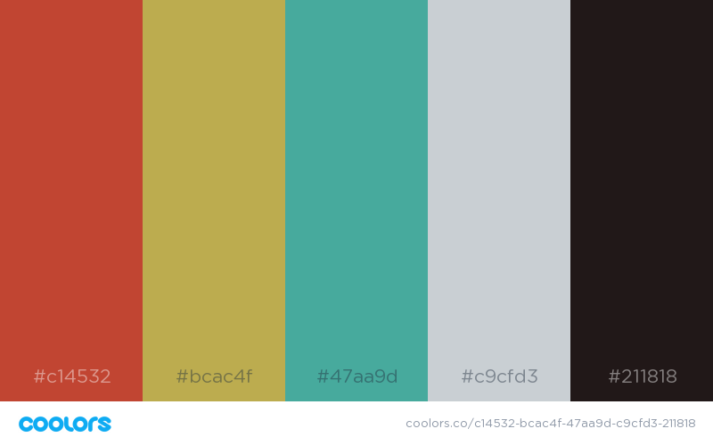

Weather web site Planning
Katrina Kaczorowski - CIT 230
Fortunate Forecasts
Color-Scheme
My color scheme is fairly basic with three major colors that are fairly close to the primary colors along with a light grey and a color fairly close to black. I chose these colors to reflect the tradictional colors in a Japanese ‘Luck Cat’ statue. The major title of the page will be in black with white text. The menus will be red with white text, but show up green with black when the cursor hovers over it. The body of the page will mostly be grey with black text with plenty of white space. When links have been used they will show up as either green when on a white background or yellow when on a dark background.
